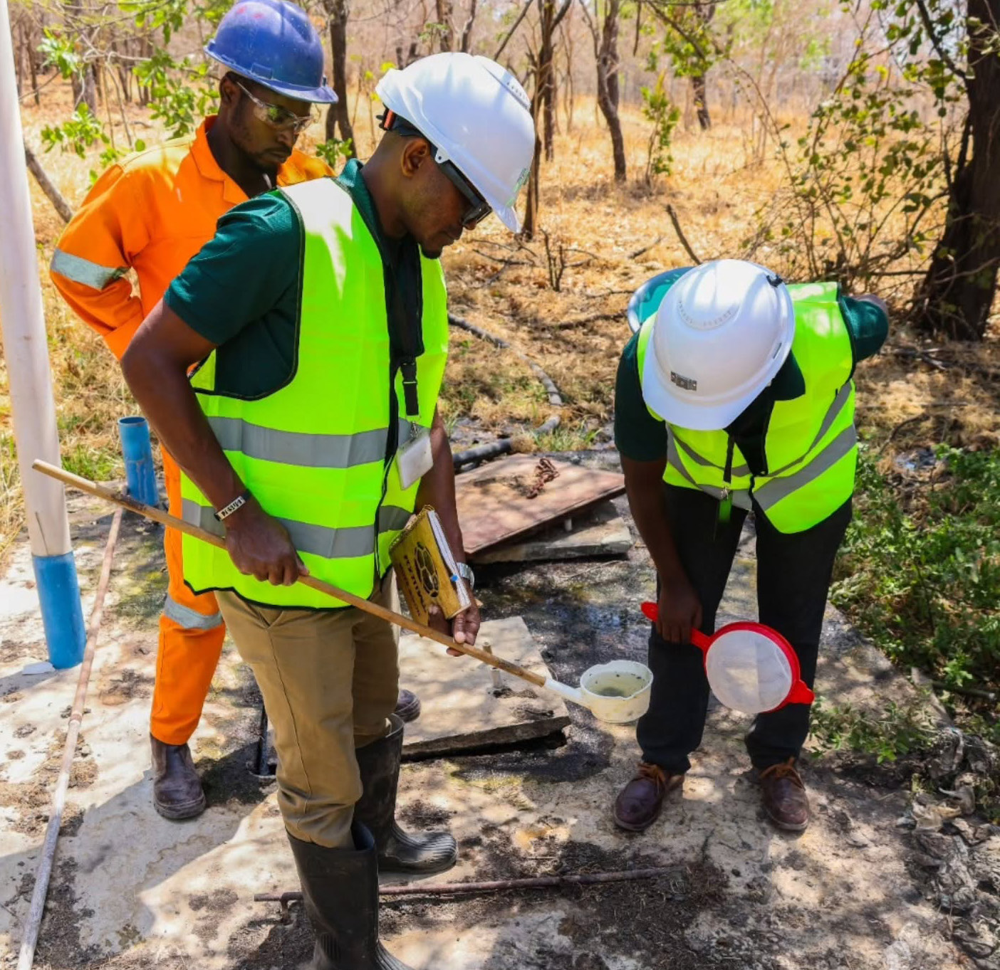
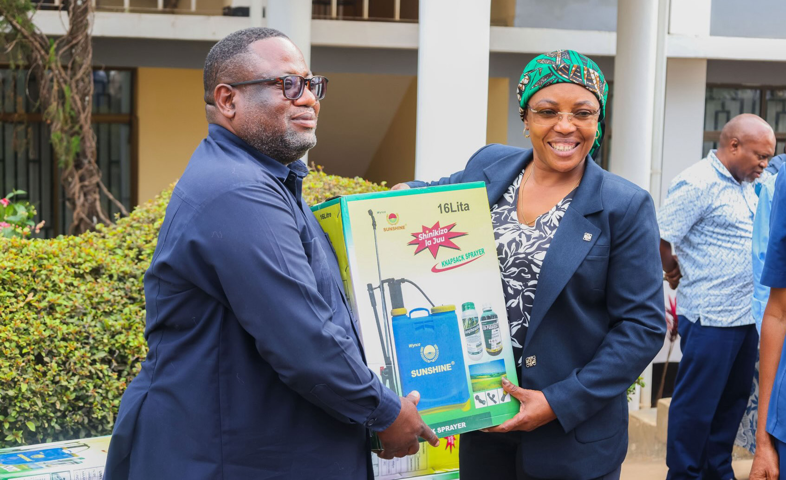
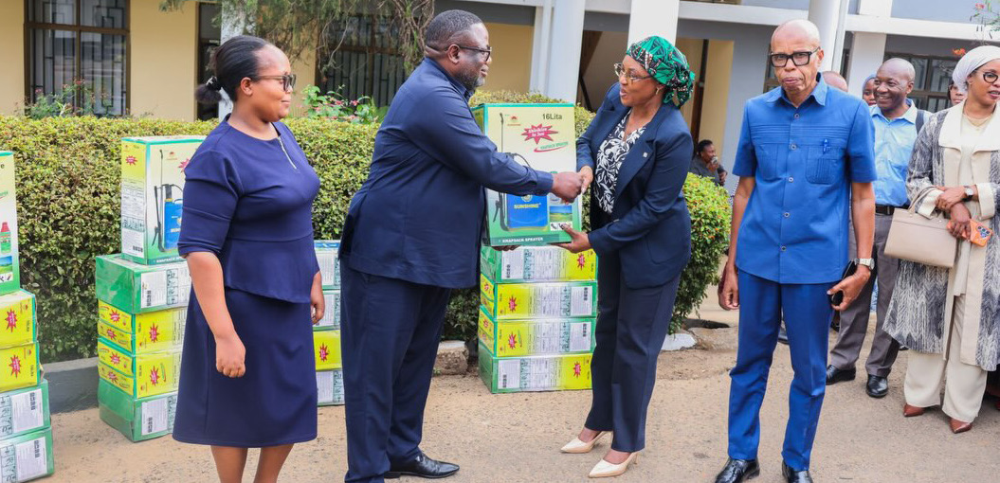
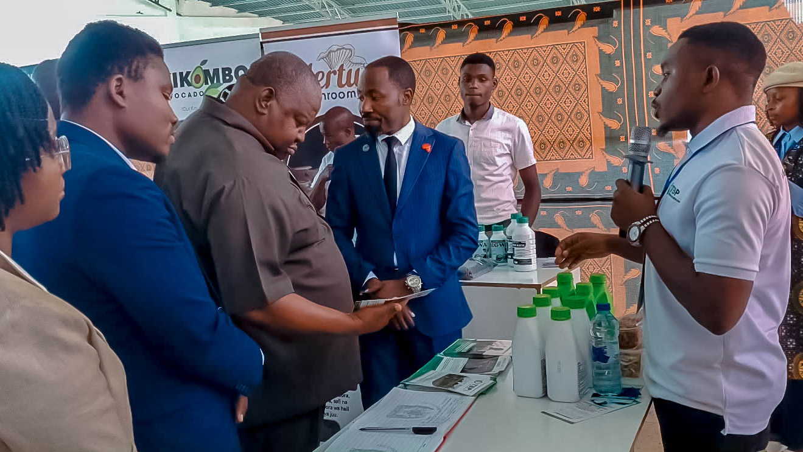
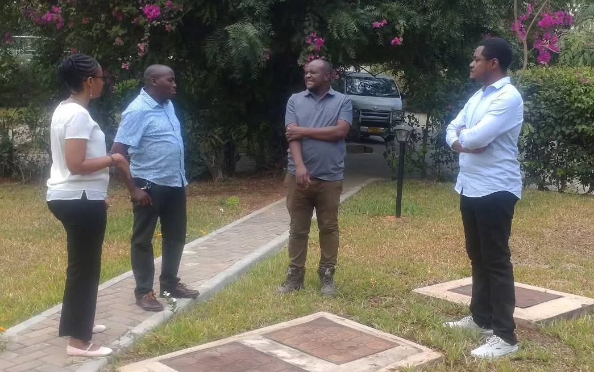
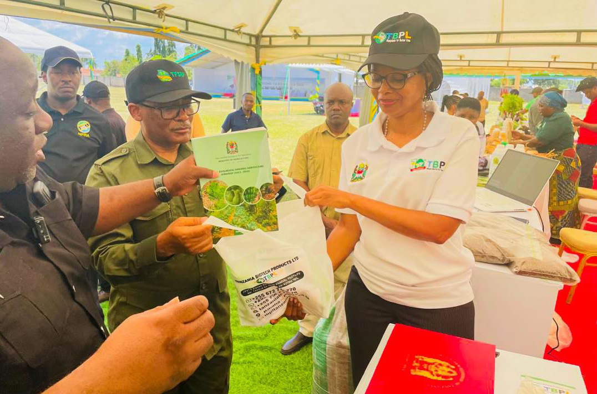
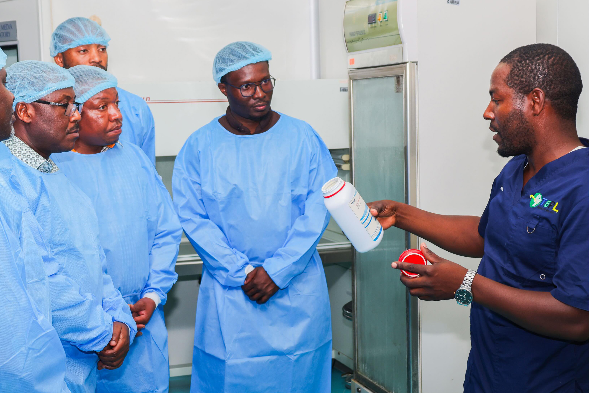

Newsletter

Field report
p. 10Performance
≈19.5TZS bn
TBPL records TZS 19.5 billion in sales over three years
p. 04Issue 001 · October 2026
In this issue
Message from the Editor
Performance · Report to Parliament
Annual sales, three financial years
As presented to the Parliamentary Standing Committee on Industries, Trade, Agriculture and Livestock.
≈19.50TZS billion cumulative sales over the past three financial years
13,131litres
Biological pesticide sales by June 2026
131.31TZS m
Value of those biological pesticide sales
3,475litres
Fosforina and Dimargon bio-fertilisers, produced on a trial basis
751,870litres
Biological products distributed.
Jan 2027
Expected market entry for Fosforina and Dimargon



Field report · Chunya, Mbeya Region

The visit in three parts
By combining education, inspection, and product awareness, TBPL continues to promote informed approaches to environmental management and mosquito control.
Explainer
TBPL products named in this issue
What these pages say about each product, and nothing more. Product names appear in the source in more than one form.

Thurisave: intended crops
At the exhibition
- Venue
- Usagara Secondary School Grounds, Tanga Region
- Dates
- 10–16 October 2026
- Visitor
- Prof. Peter Msoffe, Deputy Permanent Secretary, Ministry of Agriculture
- Shown
- Thurisave, Fosforina, Dimargon
Explainer
Fosforina and Dimargon: from trial to market
Milestones stated in this issue. Dashed: expected, not yet happened. The products are listed on page 13.

Field report · Kibaha, Pwani
How it works
From heavy rain to malaria risk, and where larval control acts
Each step is stated in the article. Its effectiveness, the article notes, depends on appropriate product use alongside other recommended malaria prevention and control measures. Schematic.
National malaria prevalence has declined from 14.3 per cent to 5.5 per cent, while Arusha and Njombe have recorded prevalence levels below one per cent, alongside similar progress in Zanzibar.Samwel Paul MzirayMarketing Manager, TBPL, speaking on Radio One
Figures as quoted during the broadcast.
P.O Box 2669, Development House
Kivukoni Front, Ohio St
Dar es Salaam
www.tanzaniabiotech.co.tz
@tbpltanzania
Facebook · Instagram · X · LinkedIn